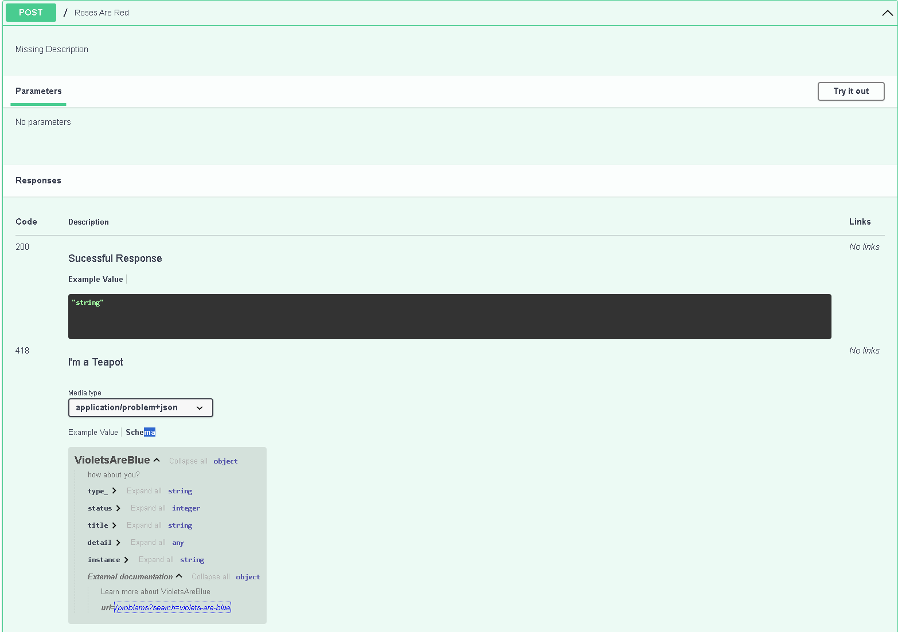
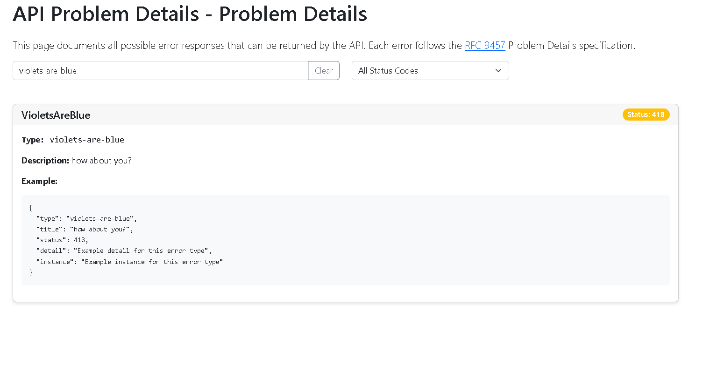

Tutorial
Basics
Enpoint
An endpoint is the most atomic ASGI component in lihil, registered under Route with Route.{http method}, such as Route.get. It defines how clients interact with the resource exposed by the Route.
In the ASGI callchain the endpoint is typically at the end.
Let's start with a function that creates a User in database.
Quick Start:
Expose a random function as an endpoint
app/users/api.py
from msgspec import Struct
from sqlalchemy.ext.asyncio import AsyncEngine
from .users.db import user_sql
class UserDB(UserData):
user_id: str
def get_engine() -> AsyncEngine:
return AsyncEngine()
async def create_user(user: UserData, engine: AsyncEngine) -> UserDB:
user_id = str(uuid4())
sql = user_sql(user=user, id_=user_id)
async with engine.begin() as conn:
await conn.execute(sql)
return UserDB.from_user(user, id=user_id)
To expose this function as an endpoint:
from lihil import Route
users_route = Route("/users")
users_route.factory(get_engine)
users_route.post(create_user)
With just three lines, we:
- Create a Route with the path "/users".
- Register
AsyncEngineas a dependency, usingget_engineas its factory. - Register create_user as the POST endpoint.
You might also use python decorator syntax to register an endpoint
Param Parsing
from lihil import use, Ignore
from typing import Annotated, NewType
from sqlalchemy.ext.asyncio import AsyncConnection, AsyncEngine
async def get_conn(engine: AsyncEngine) -> AsyncConnection:
async with engine.begin() as conn:
yield conn
UserID = NewType("UserID", str)
def user_id_factory() -> UserID:
return UserID(str(uuid4()))
async def create_user(
user: UserData, user_id: UserID, conn: AsyncConnection
) -> Resp[UserDB, stauts.Created]:
sql = user_sql(user=user, id_=user_id)
await conn.execute(sql)
return UserDB.from_user(user, id=user_id)
users_route.factory(get_conn)
users_route.factory(user_id_factory, reuse=False)
Here,
user_idwill be created byuser_id_factoryand return a uuid in str.connwill be created byget_connand return an instance ofAsyncConnection, where the the connection will be returned to engine after request.UserDBwill be json-serialized, and return a response with content-type beingapplication/json, status code being201.
Param Marks
Explicitly declaring a parameter with a param mark tells Lihil to treat it as-is, without further analysis.
Header[T, H]for header param with typeTand header keyHCookie[T, C]for cookie param with typeTand cookie nameCPath[T]for path param with typeTQuery[T]for query param with typeTBody[T]for body param with typeTForm[T]for body param with content typemultipart/from-dataand type [T]Use[T]for dependency with typeT
Header and Cookie allows your to provide metadata for param parsing,
Use typing.Literal to provide header/cookie name,
-
Here param
credexpects a header with keyUser-Credentials. -
If key not provided, The kebab case of param name is used, for example, here
x_access_tokenexpects a header with keyx-access-token
Param Analysis Rules
If a param is not declared with any param mark, the following rule would apply to parse it:
- If the param name appears in route path, it is interpreted as a path param.
- If the param type is a subclass of
msgspec.Struct, it is interpreted as a body param. -
If the param type is registered in the route graph, or is a lihil-primitive type, it will be interpered as a dependency and will be resolved by lihil
-
Otherise, it is interpreted as a query param.
Example:
from lihil import Route, Payload, Use, EventBus
user_route = Route("/users/{user_id}")
class UserUpdate(Payload): ...
class Engine: ...
class Cache: ...
user_route.factory(Cache)
@user_route.put
async def update_user(user_id: str, engine: Use[Engine], cache: Cache, bus: EventBus):
return "ok"
In this example:
user_idappears in the route path, so it is a path paramengineis annotated with theUsemark, so it is a dependencycacheis registered in the user_route, so it is also a dependencybusis a lihil-builtin type, it is therefore a dependency as well.
Only user_id needs to be provided by the client request, rest will be resolved by lihil.
Since return param is not declared, "ok" will be serialized as json '"ok"', status code will be 200.
Data validation
lihil provide you data validation functionalities out of the box using msgspec.
Constraints
- You might combine
typing.Annotatedandmsgspec.Metato put constraints on params,
all_users = Route("/users")
@all_users.get
async def get_users(numers: Annotated[int, msgspec.Meta(gt=0)]):
...
Here get_user expects a query param numers, an integer with value greater than 0.
- Constraints with structual data
from typing import Annotated
from lihil import Payload
from msgspec import Meta
UnixName = Annotated[
str, Meta(min_length=1, max_length=32, pattern="^[a-z_][a-z0-9_-]*$")
]
class User(Payload):
name: UnixName
groups: Annotated[set[UnixName], Meta(max_length=16)] = set()
cpu_limit: Annotated[float, Meta(ge=0.1, le=8)] = 1
mem_limit: Annotated[int, Meta(ge=256, le=8192)] = 1024
@all_users.post
async def create_user(user: User): ...
Here create_user expects a body param user, a structual data where each field has constraints.
- Constraints with supported types
Checkout msgspec constraints for more details on specific constraints that you can set on different types.
Return Marks
Often you would like to change the status code, or content type of your endpoint, to do so, you can use one or a combination of several return marks. for example, to change stauts code:
from lihil import Resp, status
async def create_user(user: UserData, engine: Engine) -> Resp[UserDB, status.Created]:
...
Now create_user would return a status code 201, instead of the default 200.
There are several other return marks you might want to use:
Json[T]for response with content-typeapplication/json
Endpoints are assumed to return Json[T] by default, async def f() -> str is the same as async def f() -> Json[str]
Stream[T]for server sent event with content-typetext/event-streamTextfor response with content-typetext/plainHTMLfor response with content-typetext/htmlEmptyfor empty response
You can use these return marks just like plain python return type hint
return marks have no runtime/typing effect outside of lihil, your type checker would treat Json[T] as T.
Response with status code
Resp[T, 200]for response with status code200. whereTcan be anything json serializable, or another return mark.
For instance, in the create_user example, we use Resp[UserDB, status.Created] to declare our return type, here T is UserDB.
- By default, the return convert is json-serialized, so that it is equiavlent to
Resp[Json[UserDB], status.Created]. - If you would like to return a response with content type
text/html, you might useHTML
Return Union
it is valid to return union of multiple types, they will be shown as anyOf schemas in the open api specification.
Custom Encoder/Decoder
You can also use your own customized encoder/decoder for request params and function return.
To use them, annotate your param type with CustomDecoder and your return type with CustomEncoder
from lihil.di import CustomEncoder, CustomDecoder
user_route = @Route(/users/{user_id})
async def get_user(
user_id: Annotated[str, CustomDecoder(decode_user_id)]
) -> Annotated[str, CustomEncoder(encode_user_id)]:
return user_id
decodershould expect a single param with type eitherstr, for non-body param, orbytes, for body param, and returns required param type, in thedecode_user_idcase, it isstr.
encodershould expect a single param with any type that the endpoint function returns, in theencode_user_idcase, it isstr, and returns bytes.
EndPoint properties
- Provide extra meta data of endpoint through route decorator.
- Endpoint can have these properties:
errors: Sequence[type[DetailBase[Any]]] | type[DetailBase[Any]]
"Errors that might be raised from the current `endpoint`. These will be treated as responses and displayed in OpenAPI documentation."
in_schema: bool
"Whether to include this endpoint inside openapi docs"
to_thread: bool
"Whether this endpoint should be run wihtin a separate thread, only apply to sync function"
scoped: Literal[True] | None
"Whether current endpoint should be scoped"
auth_scheme: AuthBase | None
"Auth Scheme for access control"
tags: Sequence[str] | None
"OAS tag, endpoints with the same tag will be grouped together"
- `scoped`: if an endpoint requires any dependency that is an async context manager, or its factory returns an async generator, the endpoint would be scoped, and setting scoped to None won't change that, however, for an endpoint that is not scoped, setting `scoped=True` would make it scoped.
- Provide a properties for every endpoint in the route:
You might provide default properties when intialize a route,
from lihil.routing import Route, EndpointProps
default_props = EndpointProps(errors=[UserNotFoundError, UserInactiveError])
prop_route = Route(props=default_props)
- Here
default_propswould be applied to every endpoint added toprop_route. - endpoint properties provided via route decorator like
route.getwould override roperties provided by route.
Route
When you define a route, you expose a resource through a specific path that clients can request. you then add an Endpoint on the route to determin what clients can do with the resource.
Take url https://dontclickme.com/users as an example, path /users would locate resource users.
Defining an route
If you have existing lihil.Graph and lihil.MessageRegistry that you would like to use, put then in the route constructor.
This is useful if you keep dependencies and event listeners in separate files, example:
from project.users.deps import user_graph
from project.users.listeners import user_eventregistry
user_route = Route(graph=uesr_graph, registry=user_eventregistry)
You can also add middlewares to a route if you want them to apply only to that specific route.
from starlette.middleware.cors import CORSMiddleware
from starlette.middleware.httpsredirect import HTTPSRedirectMiddleware
Route(middlewares=[CORSMiddleware])
route.add_middleware(HTTPSRedirectMiddleware)
register endpoint to an route.
In previous dicussion, we expose create_user as an endpoint for POST request of users_route.
we can also declare other http methods with similar syntax, this includes:
GETPOSTHEADOPTIONSTRACEPUTDELETEPATCHCONNECT
This means that an route can have 0-9 endpoints.
to expose a function for multiple http methods
-
apply multiple decorators to the function
-
or, equivalently, use
Route.add_endpoint
Defining an sub-route
In previous discussion, we created a route for users, a collection of the user resource,
to expose an specific user resource,
user_route = users_route.sub("{user_id}")
@user_route.get
async def get_user(user_id: str, limit: int = 1): ...
Here,
we define a sub route of users_route, when we include an route into our Lihil, all of its sub-routes will also be included recursively.
Route are unique to path, thus, you might call it constructor with same path multiple times.
@users_route.sub("{user_id}").get
async def get_user(user_id: str, limit: int = 1): ...
@users_route.sub("{user_id}").put
async def update_user(data: UserUpdate): ...
here both get_user and update_user are under the same route.
The root route
an route with path / is the root route, if not provided, root route is created with Lihil by default, anything registered via Lihil.{http method} is the under the root route.
WebSocket
lihil supports the usage of websocket, you might use WebSocketRoute.ws_handler to register a function that handles websockets.
from lihil import WebSocketRoute, WebSocket, Ignore, use
ws_route = WebSocketRoute("web_socket/{session_id}")
async def ws_factory(ws: WebSocket) -> Ignore[AsyncResource[WebSocket]]:
await ws.accept()
yield ws
await ws.close()
@ws_route.ws_handler
async def ws_handler(
ws: Annotated[WebSocket, use(ws_factory, reuse=False)],
session_id: str,
max_users: int,
):
assert session_id == "session123" and max_users == 5
await ws.send_text("Hello, world!")
lhl = Lihil[None]()
lhl.include_routes(ws_route)
Testing
from lihil.vendors import TestClient # require httpx installed
client = TestClient(lhl)
with client:
with client.websocket_connect(
"/web_socket/session123?max_users=5"
) as websocket:
data = websocket.receive_text()
assert data == "Hello, world!"
websocket vs http
-
WebSocket handlers must be asynchronous — since communication is bidirectional and event-driven, the handler must use async def to support non-blocking interaction.
-
WebSocket connections do not support request bodies in the same way as HTTP — there is no Body parameter during the handshake. All data is exchanged after the connection is established, typically through messages sent via the WebSocket protocol.
-
WebSockets are stateful — unlike HTTP, which is stateless, a WebSocket connection persists, allowing continuous communication between the client and server. This enables maintaining per-connection state (e.g. user sessions, in-memory data).
-
WebSockets use a different lifecycle — they begin with an HTTP handshake (usually a GET request), then upgrade the protocol. After that, communication is done over the WebSocket protocol, not HTTP.
-
Standard request/response patterns do not apply — WebSockets are message-based and support real-time interaction, so traditional concepts like status codes, headers per message, or body parsing don’t directly apply after the initial handshake.
Middlewares
Both Lihil and Route has add_middleware API that accept one, or a sequence of MiddlewareFactory.
a MiddlewareFactory is a callable that receives one positional argument of type ASGIApp and returns a ASGIApp. for example:
# This piece of code is for demonstration only.
def tracingmw_factory(next_app: ASGIApp) -> ASGIApp:
async def tracemw(scope, receive, send):
scope["trace_id"] = str(uuid.uuid4())
await next_app(scope, receive, send)
return trace_mw
lihil uses starlette internally, you can directly import middlewares from starlette, for example:
from starlette.middleware.cors import CORSSMiddleware
lhl = Lihil(middlewares=[lambda app: CORSMiddleware(app, add_methods="*")])
for complex middleware that require many external dependencies, you might to construct them inside lifespan.
Config Your App
There are several settings you can change to control the behavior of lihil,
-
config file, e.g:
pyproject.tomlThis will look for
tool.lihiltable in thepyproject.tomlfile extra/unkown keys will be forbidden to help prevent misconfigingNote: currently only toml file is supported
-
AppConfiginstancethis is particularly useful if you want to inherit from AppConfig and extend it.
-
Command line arguments:
-
use
.to express nested fields -
add
--helpto see available options
-
You can access AppConfig anywhere in your app via lihil.config.lhl_get_config
Error Hanlding
- use
route.get(errors=VioletsAreBlue)to declare a endpoint response
class VioletsAreBlue(HTTPException[str]):
"how about you?"
__status__ = 418
@lhl.post(errors=VioletsAreBlue)
async def roses_are_red():
raise VioletsAreBlue("I am a pythonista")
- use
lihil.problems.problem_solveras decorator to register a error handler, error will be parsed as Problem Detail.
from lihil.problems import problem_solver
# NOTE: you can use type union for exc, e.g. UserNotFound | status.NOT_FOUND
@problem_solver
def handle_404(req: Request, exc: Literal[404]):
return Response("resource not found", status_code=404)
A solver that handles a specific exception type (e.g., UserNotFound) takes precedence over a solver that handles the status code (e.g., 404).
Exception-Problem mapping
lihil automatically generates a response and documentation based on your HTTPException,
Here is the generated doc for the endpoint roses_are_red

click url under External documentation tab
we will see the detailed problem page

By default, every endpoint will have at least one response with code 422 for InvalidRequestErrors.
Here is one example response of InvalidRequestErrors.
{
"type_": "invalid-request-errors",
"status": 422,
"title": "Missing",
"detail": [
{
"type": "MissingRequestParam",
"location": "query",
"param": "q",
"message": "Param is Missing"
},
{
"type": "MissingRequestParam",
"location": "query",
"param": "r",
"message": "Param is Missing"
}
],
"instance": "/users"
}
- To alter the creation of the response, use
lihil.problems.problem_solverto register your solver. - To change the documentation, override
DetailBase.__json_example__andDetailBase.__problem_detail__. - To extend the error detail, provide typevar when inheriting
HTTPException[T].
Message System
Lihil has built-in support for both in-process message handling (Beta) and out-of-process message handling (implementing), it is recommended to use EventBus over BackGroundTask for event handling.
There are three primitives for event:
- publish: asynchronous and blocking event handling that shares the same scope with caller.
- emit: non-blocking asynchrounous event hanlding, has its own scope.
- sink: a thin wrapper around external dependency for data persistence, such as message queue or database.
from lihil import Resp, Route, status
from lihil.plugins.bus import Event, EventBus
from lihil.plugins.testclient import LocalClient
class TodoCreated(Event):
name: str
content: str
async def listen_create(created: TodoCreated, ctx):
assert created.name
assert created.content
async def listen_twice(created: TodoCreated, ctx):
assert created.name
assert created.content
bus_route = Route("/bus", listeners=[listen_create, listen_twice])
@bus_route.post
async def create_todo(name: str, content: str, bus: EventBus) -> Resp[None, status.OK]:
await bus.publish(TodoCreated(name, content))
An event can have multiple event handlers, they will be called in sequence, config your BusTerminal with publisher then inject it to Lihil.
-
An event handler can have as many dependencies as you want, but it should at least contain two params: a sub type of
Event, and a sub type ofMessageContext. -
if a handler is reigstered with a parent event, it will listen to all of its sub event. for example,
-
a handler that listens to
UserEvent, will also be called whenUserCreated(UserEvent),UserDeleted(UserEvent)event is published/emitted. -
you can also publish event during event handling, to do so, declare one of your dependency as
EventBus,
async def listen_create(created: TodoCreated, _: Any, bus: EventBus):
if is_expired(created.created_at):
event = TodoExpired.from_event(created)
await bus.publish(event)
Dependency Injection
lihil uses ididi(https://lihil.cc/ididi) for dependency injection.
Usage in lihil
register a dependency with a route
If a dependency is registered with any route, it will be available in every route included in Lihil.
class Engine: ...
def get_engine() -> Engine: ...
user_route = Route("/user")
user_route.add_nodes(get_engine) # register Engine as a dependency in user_route
order_route = Route("/order") # order will use `get_engine` to resolve `Engine` as well.
lhl = Lihil(routes=[user_route, order_route])
- use
Route.factoryto add a dependency, orRoute.add_nodesto add many dependencies. - It is recommended to register dependency where you use them, but you can register them to any route if you want.
- You might create a
ididi.Graphfirst, register dependencies with it, then inject it into any route.
Declare dependency with endpoint signature
If you would like to declare dependencies directly in your endpoint function: (as opposed to register with route)
Use lihil.Use mark to declare a class as a dependency.
Use typing.Annotated[T, use(Callable[..., T]]) to declare a factory in your endpoint
from lihil import use
@route.get
async def get_user(engine: Annotated[Engine, use(get_engine)]) : ...
Use Ignore in return annotation to declare a function dependencies
You can create function as dependency by Annotated[Any, use(your_function)]. Do note that you will need to annotate your dependency function return type with Ignore like this
Tehcnical details
-
If your factory function is a generator(function that contains
yieldkeyword), it will be treated asscoped, meaning that it will be created before your endpoint function and destoried after. you can use this to achieve business purpose via clients that offeratomic operation, such as database connection. -
if your function is a sync generator, it will be solved within a separate thread.
-
all graph will eventually merged into the main graph holding by
Lihil, which means that, if you register a dependency with a factory in routeA, the same factory can be used in every other route if it is required.
Have not found what you are looking for?
please let us know by posting in the discussion.